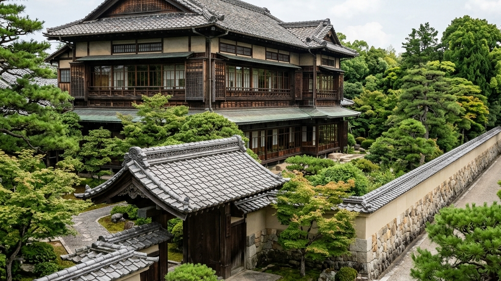
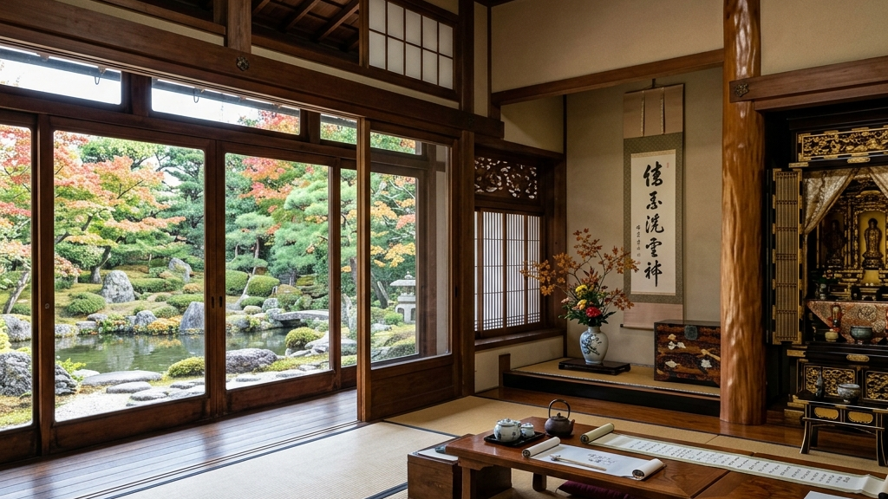
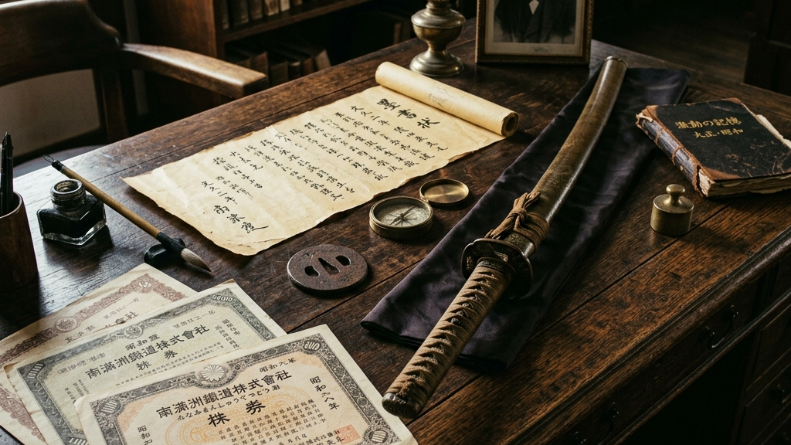
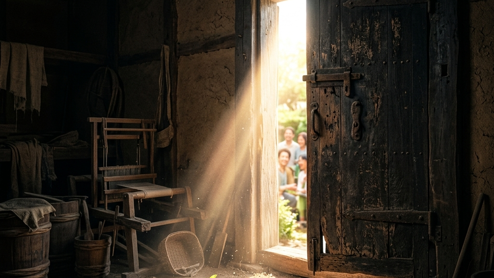
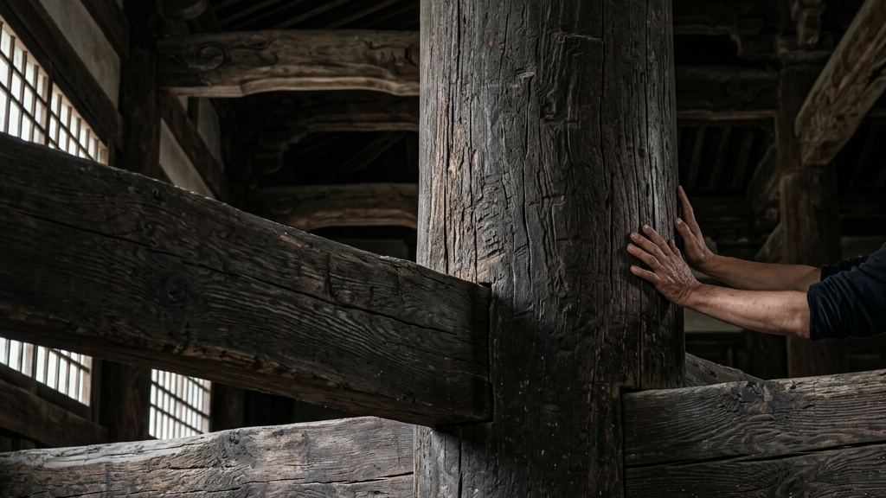

山口県防府市の広大な敷地に静かに佇む白石家の大豪邸。そこには、約260年もの永きにわたり連綿と受け継がれてきた家業の息遣いと、圧倒的な空間の重力が宿っている。国の登録有形文化財に指定されたその建物は、単なる過去の遺物ではない。幾度もの時代の波に洗われ、需要消失という絶望的な摩擦を経験しながらも、決して途絶えることなく現在へと接続された「生きた文化財」である。本稿では、敷地3000坪の圧倒的スケールを誇る大正建築の極致から、高杉晋作ら歴史的偉人との交錯、そして現代の当主が挑む泥臭い再生事業に至るまで、白石家が背負う知層と執念の全貌を紐解いていく。
【本稿で紐解く3つの核心】

山口県防府市。歴史の息吹が色濃く残るこの街の中心部から少し離れた場所に、周囲の風景を圧するような長い塀に囲まれた広大な空間が存在する。それが、約260年の歴史を持つ家業を営み続けてきた白石家の本邸である。敷地面積約3000坪という数字は、単なる物理的な広さを示す指標にとどまらない。それは、この一族が地域社会の中でどれほどの重責を担い、どれほど強固な地盤を築き上げてきたかを示す、一つの生々しい証左である。そして、その広大な敷地の中心に鎮座する自宅の一部は、国の登録有形文化財に指定されており、現代の建築技術では到底再現し得ない圧倒的な美学と執念の結晶として、訪れる者を無言のうちに圧倒する。空間の再編が提示する「工芸的」なるものの新しい文脈においても語られるように、空間そのものが持つ重力は、中に置かれるいかなる美術品よりも強烈なメッセージを発するのだ。
白石家の大豪邸に足を踏み入れた瞬間に知覚するのは、計算し尽くされた「非効率」の連続である。邸内には約20もの部屋が存在するが、その天井はすべて異なるデザインが施されている。均一化と効率化を極限まで追求する現代の建築思想からは完全に逸脱したこの狂気とも言える手仕事の集積は、当時の職人たちがそれぞれの部屋の用途、方角、そしてそこに差し込む光の角度に至るまでを徹底的に読み解き、持てる技術のすべてを注ぎ込んだ結果である。それはまさに、アノニマスの痕跡と不完全なる美を体現するものであり、効率という名の暴力に屈しなかった者たちだけが到達できる静謐なる美の頂点と言えるだろう。
「効率という名の刃で削ぎ落とされた空間には、人の魂は決して定着しない。無駄と非効率の堆積こそが、建築に永遠の命を吹き込むのである」
— 大正建築が現代に突きつける哲学
特に圧巻なのは、かつて重要な商談や接客が行われていたであろう27畳の大座敷である。その広大な畳の海を抜けた奥には、見事な庭園の景色をパノラマのように一望できる巨大なガラス窓が配置されている。四季折々に表情を変える自然の借景を、部屋の内部から一枚の絵画のように鑑賞するためのこの設えは、自然と人工物の境界を極限まで曖昧にする日本建築特有の「内と外の連続性」を完璧に具現化したものだ。単なる住居としての機能を越え、商談という極めて政治的かつビジネス的なやり取りを行う場において、これほどの圧倒的な「余白」を用意することの意味を考えてみてほしい。それは、言葉による交渉以前に、空間の力によって相手の精神を掌握し、絶対的な権威と信頼を提示するための高度な装置でもあったのだ。そして、その空間を引き締める床の間には、現在では入手不可能な希少な銘木が惜しげもなく使用され、さらに部屋の隅に安置された仏壇には、細部まで信じられないほどの精度で手彫りされた彫刻が施されている。これら一つ一つのディテールは、単なる成金的な富の誇示ではなく、大正時代の最高峰の建築技術と材料を後世に残そうとした、先人たちの文化的な使命感の表れに他ならない。
| 建築要素 | 物理的特徴と意匠 | 背景にある思想・価値 |
|---|---|---|
| 20の部屋の天井 | すべて異なる意匠と幾何学的な職人技 | 均一化への徹底的な抗いと空間ごとの役割の尊重 |
| 27畳の大座敷 | 庭園を一望する大ガラス窓と希少木材の床の間 | 自然と建築の境界の融解、権威の静かなる具現化 |
| 手彫りの仏壇 | 大正期の極限の彫刻技術による細密表現 | 先祖への畏敬の念と、技術を「祈り」へ昇華させる精神 |
これらの建築群は、単に美しいだけではなく、そこを歩く者の身体感覚に直接訴えかけてくる。空間に宿る静謐な記憶という言葉の通り、重厚な柱の質感、長い廊下を歩くたびに微かに軋む床の音、そして計算された採光によって生み出される陰翳。それらすべてが有機的に絡み合い、260年という膨大な時間を生きてきた家業の重みを、訪れる者に擬似体験させる装置として機能しているのだ。防府市のこの3000坪の空間は、過去の栄華を閉じ込めた標本箱ではない。それは、現代の我々がとうの昔に喪失してしまった「狂気にも似た徹底的な手仕事への執念」を静かに、しかし強烈に突きつけてくる、生きた教育の場なのである。そして、この空間を維持し続けるということは、単なる物理的なメンテナンスを越えて、先人たちの魂の重さを現代に繋ぎ止めるという、途方もない覚悟を必要とする行為なのである。

登録有形文化財としての建築的価値の奥底には、260年という気が遠くなるような時間が堆積した「歴史の知層」が存在する。防府市における白石家の存在意義は、単に広大な敷地を持つ名家であるという事実にとどまらない。その歴史の糸をたどれば、日本という国家が大きくうねりを上げて変革期を迎えた幕末から近代にかけての、生々しい血肉の通った物語へと直結していくのだ。白石家の歴史を紐解くことは、そのまま日本の近代史の裏面史を歩くことと同義であり、名もなき地方の家業がいかにして中央の歴史的奔流と深く交差してきたかを証明する貴重な記録でもある。
その最も鮮烈な記憶の一つが、幕末の風雲児・高杉晋作との深い繋がりである。白石家の6代目の息子が、あの伝説的な「奇兵隊」に属していたという事実は、単なる歴史のトリビアではない。当時の白石家は、身分を超えて有志が集った奇兵隊に対し、莫大な資金援助を行っていたという。国家の転覆と新たな夜明けを目指す命懸けの武力集団に対して、地方の一家業が私財を投げ打って支援を行う。そこには、単なるビジネス上の打算を越えた、新しい時代を切り拓こうとする強烈なパトロン的使命感と、文字通りの「命懸けの覚悟」があったはずだ。事実、高杉晋作本人が白石家を訪れ、その縁から彼自身が名付けた部屋が現在でも自宅内に存在するというエピソードは、歴史の教科書には決して載ることのない、個人の血の通った熱量の痕跡である。時代に抗う「工芸的なるもの」の真髄に通じるように、思想は常に、それを支える強固なパトロンと物質的な土台があって初めて歴史に刻まれるのだ。
6代目の息子が奇兵隊に属し、高杉晋作らの活動を経済的に強固にバックアップ。新しい国家の青写真を描く革命の火種を、地方の名家が文字通り「資金」で支え抜いた。
国家の重鎮として貴族院に名を連ねるほどの権力を掌握。満州鉄道という国策会社の巨大な株主として、現在価値にして総資産100億円以上という途方もない経済圏を構築した。
時代の形が変われど、その強固な地盤と歴史的な文脈は失われることなく、現代においても日本のトップ層との静かなる繋がりを保ち続けている。
白石家の繁栄の頂点を示すもう一つの生々しい物証が、満州鉄道の株券である。現在価値にして約22億円分もの株券が現存し、当時の総資産は100億円を優に超えていたとも言われている。昭和初期まで貴族院にも名を連ねていたという事実は、彼らが単なる地方の豪農や商人ではなく、国家の意思決定に関与するレベルの圧倒的な資本家階級であったことを如実に物語っている。しかし、ここに着目すべき本質がある。どれほどの巨万の富を築き、どれほど強大な権力を手にしたとしても、時代という残酷な波は容赦なくすべての環境を押し流していくという冷徹な事実だ。軍閥の台頭、敗戦、財閥解体、そして戦後の高度経済成長と産業構造の激変。かつて「不変の価値」と思われていた満鉄の株券すらも、歴史のうねりの中では単なる紙切れへと変貌するリスクを常に孕んでいた。
それでもなお、白石家が260年という狂気的な時間を生き抜き、この防府の地に3000坪の屋敷を維持し続けられたのはなぜか。それは、彼らが単なる「お金（資本）」の蓄積に依存したのではなく、地域との強固な結びつきや、文化・建築に対する「譲れない美学」という、形のない無形の資産（ブランドと哲学）を蓄積してきたからに他ならない。内在する空間の解剖学が示す通り、物理的な富はいつか枯渇し消失する運命にあるが、人々の記憶や空間に焼き付けられた「文化の重力」は、時代を超えて生き残り続けるのである。高杉晋作が名付けた部屋で交わされた熱を帯びた議論の残響は、今も確実にその空間の空気を震わせている。歴史上の偉人たちが駆け抜けたその同じ床板を踏みしめる時、我々は100億円という数字の羅列よりも遥かに重く、そして生々しい「時間の価値」の前にひれ伏すしかないのである。

過去の圧倒的な栄華と、文化財としての静謐な美しさ。そこだけを切り取れば、白石家はまるで誰もが羨むような盤石な安泰の中にいるように錯覚するだろう。しかし、現実は決して甘くはない。むしろ、これほどまでに巨大で重厚な歴史の遺産を背負うこと自体が、現代の当主にとっては逃げ場のない「巨大な呪縛」としての側面を強く持っているのだ。10代当主である民彦氏が直面した現実は、時代とともに容赦なく目減りしていく家業の需要と、それに反比例するように重くのしかかる巨大建築の維持費という、あまりにも泥臭く、残酷な摩擦の連続であった。
「10年近く、売り上げがほとんどない時期もあった」。この一言に込められた絶望の深さを、我々はどれほど想像できるだろうか。かつて総資産100億円を誇り、国を動かすほどの権力を持った一族の末裔が、日々の売り上げという極めて現実的で容赦のない数字の壁の前に立ち尽くす。伝統工芸や老舗企業の多くが直面するこの「需要の消失」という現象は、誰のせいでもない。ただ単に時代が変化し、人々のライフスタイルが変わり、そのサービスやモノが社会から「必要とされなくなった」というだけの冷徹な結果である。どんなに素晴らしい歴史的価値があろうと、どんなに高い技術を持っていようと、資本主義の市場原理の前では、需要がないものは静かに淘汰されていくしかない。これが、美談では語り尽くせない伝統継承の「血を流すような臨床」の現場なのである。
売り上げが立たない絶望的な10年。普通の経営者であれば、早々に見切りをつけて広大な土地を切り売りし、歴史的建造物を解体してマンションにでも建て替えるのが最も「賢い」選択だろう。効率とタイパを至上命題とする現代のビジネスモデルにおいて、利益を生まない巨大な文化財を抱え続けることは、ただの不良債権でしかないからだ。しかし、民彦氏はその安易な「効率的な正解」に逃げなかった。いや、逃げられなかったのかもしれない。260年という先人たちが命懸けで繋いできた血肉のバトンを、自分の代で途絶えさせるわけにはいかないという、狂気にも似た「執念」があったからだ。伝統工芸の臨床と蘇生の現場において常に求められるのは、綺麗事のコンサルティングではなく、己の手を泥だらけにして現状を直視する「当事者の覚悟」のみである。
そこで民彦氏が一念発起して着手したのが、自らの持つ最大の資産である「空間」を解放することであった。歴史ある「蔵」を無料開放し、地域の文化イベントの場として提供する。さらに、これまでの家業のノウハウを活かした新たな再生事業への挑戦。一見すると華やかな「地域創生」の美談に聞こえるかもしれないが、その裏にあるのは、どうすればこの巨大な文化財に再び血を通わせ、現代の人々にとって「必要なもの」として再定義できるかという、血を吐くような試行錯誤の連続である。閉ざされた名家の門戸を開き、現代の多様なニーズと無理やりにでも接合させていく作業。それは、格式高い伝統のプライドを一度かなぐり捨てて、泥水に顔を突っ込んででも生き残る道を探すという「自己変革の痛み」を伴うものだったに違いない。しかし、その強烈な摩擦と自己変革の末に生まれた新たなコミュニティの熱量こそが、完全に停止しかけていた260年の家業の心臓に、再び力強い鼓動を打ち込ませる「蘇生」の劇薬となったのである。

白石家が所有する大豪邸が「国の登録有形文化財」に指定されているという事実は、一見すると名誉なことのように思えるかもしれない。確かに、国家からその歴史的・文化的な価値を公式にお墨付きを与えられることは、一族にとって誇るべき勲章である。しかし、有形文化財の限界と1,000年先の防波堤でも論じられているように、文化財指定という名の栄誉は、所有者に対して「絶対に形を変えてはならない」「何があっても維持し続けなければならない」という途方もない呪縛と義務を強制する両刃の剣でもあるのだ。自らの意志で自由に売却したり改築したりすることが極めて困難になり、莫大な維持コストだけが永遠に発生し続ける。この重圧に耐えかねて、手放すことを選ぶ名家は後を絶たない。それでもなお、民彦氏がこの空間を守り抜くことを選んだ背景には、単なる個人のノスタルジーを遥かに超えた、ある種の「狂気的な使命感」が存在している。
彼が守ろうとしているのは、単なる大正時代の「古い木造の箱」ではない。その空間に蓄積された260年という時間そのものであり、高杉晋作ら歴史を動かした人間たちが放っていたであろう「熱量の残響」なのだ。もしこの邸宅が解体され、更地にされてしまえば、どれだけ写真や図面が残っていようとも、その場に立って初めて肌で感じる重圧や、手仕事の凄みといった「身体的な情報」は永遠に失われてしまう。情報化社会が極まり、AIがあらゆるテキストや画像を瞬時に生成できる現代において、我々が真に渇望しているのは、そうした「絶対にコピー不可能な、物理的な質感を伴う一次情報」なのである。白石家の3000坪の空間は、そうした手触りのある歴史の記憶が、デジタルという平坦な海に飲み込まれるのを最前線で食い止める「巨大な防波堤」として機能しているのだ。
空間を次代へ手渡すということ。それは、自分が生きている間の損得勘定を完全に放棄し、「自分が死んだ後の100年先、あるいは1000年先の未来の誰か」のために、今この瞬間の摩擦と苦痛を引き受けるという、極めて自己犠牲的で宗教的な行為に等しい。かつてこの邸宅を設計し、途方もない手間をかけて天井を張り、床の間の彫刻を刻んだ名もなき職人たちもまた、「自分の仕事が後世にどう評価されるか」などという打算を超え、ただ目の前の木材に己の魂を定着させることだけに没頭していたはずだ。白石家の歴史は、そうした「見返りを求めない異常な熱量」を持った人間たちによる、世代を超えたリレーなのである。
そして今、そのバトンは10代当主の手の中にある。時代に迎合して形を変えることを拒み、あえて非効率で泥臭い「維持」という戦いを選ぶこと。蔵を開放し、地域の人々を招き入れ、新たなコミュニティの熱量と交差させることで、この巨大な防波堤に再び「生きた呼吸」をさせること。彼が行っているのは、過去の保存ではない。260年前の記憶を、現代のコンテクストへと接続し直し、未来に向けて再起動させるための「歴史のハッキング」なのである。その泥臭くも孤高の戦いは、効率と合理性ばかりを追い求めて大切なものを切り捨ててきた現代の我々に対して、「お前は何を次代へ手渡す覚悟があるのか」という、鋭く重い問いを突きつけている。
私自身、Kakeraというブランドを通じて伝統工芸や歴史的遺産と対峙する中で、常にこの「待てない」という現代の病と、効率化の波に飲み込まれそうになる己の弱さと闘い続けている。沈黙の躯体が語り始める時に触れたように、歴史ある空間やモノというものは、決して分かりやすく自分から語りかけてはくれない。そこにあるのは圧倒的な沈黙であり、その沈黙の奥底に潜む「微細な熱量」を感知するためには、こちら側が自らのスピードを落とし、評価の物差しを手放し、ただ「受容」するしかないのだ。
防府市の白石家が260年守り抜いてきた3000坪の空間。そこには、売り上げが立たない10年という絶望的な期間でも決して手放さなかった当主の「執念」と、効率化という名の刃で削ぎ落とされることを拒んだ職人たちの「狂気」が、確かに定着している。私は経営陣として、日々変化するAIの技術や、即効性のあるビジネスモデルの構築に追われている。しかし、そうした「変化し続けるもの」を追いかける一方で、いや、追いかけるからこそ、白石家の大豪邸のような「絶対に変わってはいけないもの」「圧倒的な非効率の象徴」が持つ重力が、強烈なアンチテーゼとして腹の底に突き刺さるのだ。
すぐに結果が出ないものを、待つこと。己のコントロールが及ばない巨大な歴史のうねりを前にして、ただ静かに受容し、自分の代で出来る「泥臭い蘇生」を一つずつ積み上げていくこと。それは、タイパ至上主義の現代においては、最も不器用で、最もダサい生き方かもしれない。しかし、誰もが効率と正解を求めて平坦な道を歩む時代にあって、一人泥水に塗れながら「100年先へ手渡すための防波堤」を築き続けるその不器用な狂気の中にこそ、人間だけが到達できる究極の「カッコよさ」が宿っている。白石家が背負う260年の知層は、我々にそう教えてくれている。
Reference:
＜プラチナファミリー＞山口県防府市の大豪邸 敷地面積は3000坪 260年続く家業とは？
伝統を身に纏い、1,000年先の未来へ遺す。Kakeraが織り上げる西陣織アロハシャツの哲学と私たちの物語は、CONCEPT、Kakera Aloha、およびABOUTよりご覧いただけます。